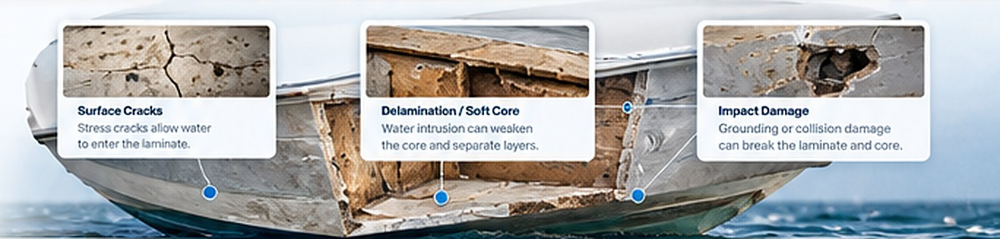
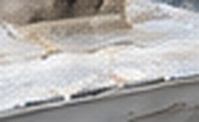
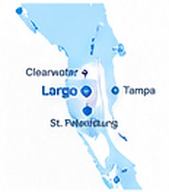

Hull Crack Repair
Repair stress cracks and damaged laminate to restore structural integrity.
Learn About This Repair
From cracks and impact damage to soft spots, delamination and structural fiberglass failure, Captain Levi’s repairs the hull — not just the surface.
Shop & Mobile Service • Largo, FL
Water intrusion, impact, vibration and aging can damage your boat’s fiberglass and core. Not every problem is visible from the outside. Small cracks, soft spots or blistering can lead to serious structural issues if not repaired correctly.
Have a hull concern? Let us inspect it

Stress cracks allow water to enter the laminate.

Water intrusion can weaken the core and separate layers.

Grounding or collision damage can break the laminate and core.
From minor cracks to major structural repairs, we have the experience and equipment to do it right.
View All Services
Repair stress cracks and damaged laminate to restore structural integrity.
Learn About This Repair
Restore punctures, gouges and fractured fiberglass.
Learn About This Repair
Locate compromised laminate or core and rebuild affected areas.
Learn About This Repair
Address blistering and affected laminate as appropriate.
Learn About This Repair
Rebuild larger damaged sections using appropriate reinforcement and resin systems.
Learn About This Repair
We use proven marine repair techniques and high-quality materials to ensure every repair is strong, durable, and built to last. Material selection depends on your boat’s existing construction and the specific repair requirements.
We evaluate the damage, locate the source and recommend the best repair method.
Grind and scarf to a proper bonding surface. Remove damaged laminate and core.
Reinforce with fiberglass mat, biaxial or woven roving and epoxy or vinyl ester resin (as appropriate).
Fair the repair, apply gelcoat color matching, and wet sand and buff for a like-new finish.

Identify all damaged areas and determine repair scope.

Remove damaged material and create a proper bonding surface.

Rebuild with fiberglass mat, biaxial or woven roving and epoxy or vinyl ester resin.

Shape and fair for a smooth transition to the original hull.

Apply matched gelcoat, wet sand and machine buff.

Ensure a strong, long-lasting repair built for the water.

We’ve repaired many fiberglass hull steps on performance boats, including complex repairs involving delamination, air voids, tight-radius geometry and epoxy or vinyl-ester construction. Careful preparation, proper bonding surfaces and rebuilding the laminate ensure a strong, long-term repair.
 Visible Cracks
Visible Cracks Soft or Weak
Soft or Weak
Water Intrusion Impact or
Impact orBased in Largo, Florida, we provide shop and mobile fiberglass hull repair throughout Pinellas County, Tampa Bay and surrounding areas.

Look for cracks that return after repair, spots that flex or sound dull when tapped, weeping around fittings, or water that keeps showing up in the bilge. Any of these means the laminate or core should be inspected, not just the surface.
Yes. We grind out and scarf the crack to sound laminate, rebuild it with new fiberglass, then fair and gelcoat so the repair is as strong as the surrounding hull.
Yes. We open the area, remove the wet or failed core and laminate, rebuild it with new core and fiberglass, and finish it to match.
Yes — keel abrasion, grounding damage and bottom blisters are all repaired at our Largo yard, where the boat can be hauled and properly supported.
Many hull repairs can be done at your dock or storage facility across Pinellas County and Tampa Bay. Larger structural work is done in our shop. Send photos and we’ll tell you which applies.
Send us photos or bring the boat by. We’ll take a look and explain what the repair involves.
Have a question about a hull repair, need a quote, or ready to schedule? Fill out the form or give us a call — we’ll get back to you as soon as possible. Your boat deserves the best, and we’re here to make it happen.
Tell us about your boat and the damage. We’ll get back to you quickly.

Captain Levi is an AI assistant. Chats may be saved so our crew can follow up. Nothing here is a confirmed quote. Privacy